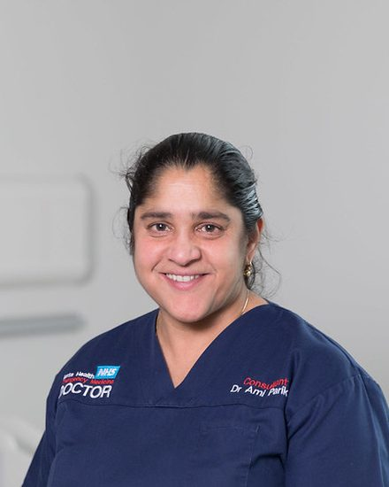
Ami Parikh
Ami is a Consultant in Paediatric Emergency Medicine and the Medical Director for Simulation for Barts Health Trust. She has a special interest in paediatric and adolescent trauma education, based at the Royal London Hospital.
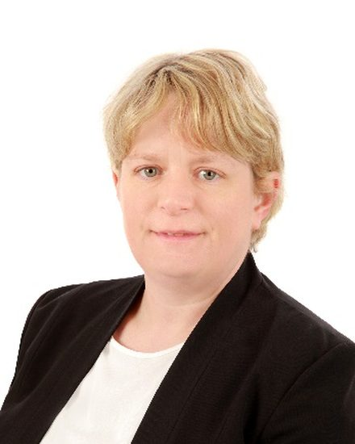
Erica Makin
Erica is a Consultant Paediatric Surgeon at King’s College Hospital with a subspecialist interest in Paediatric Hepatobiliary Surgery and Trauma. Erica is the Clinical Lead for Paediatric Surgery and Paediatric Trauma Lead for SELKaM Trauma Network. She is a member of the British Association of Paediatric Surgeons and is the chair of the Trauma Committee.
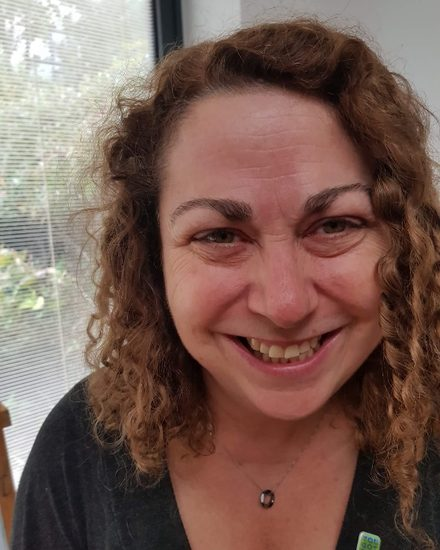
Naomi Edmonds
Naomi is a Consultant in Paediatric Intensive Care and Anaesthetics with a specialist interest in paediatric and adolescent trauma, based at the Royal London Hospital.
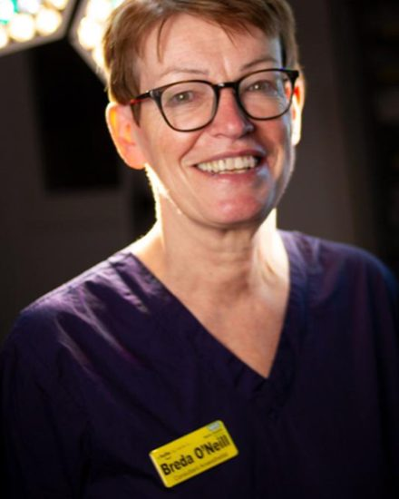
Breda O’Neill
Breda is a Consultant Anaesthetist with a specialist interest in paediatric and adolescent trauma, based at the Royal London Hospital.
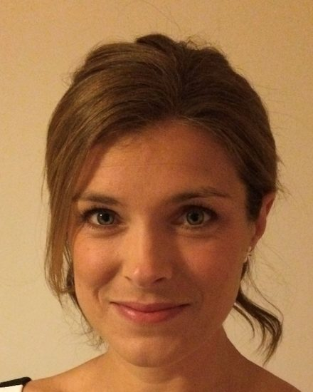
Sarah Gamester
Sarah is the Lead Nurse for the Paediatric Emergency Department at The Royal London Hospital. She is passionate about clinical leadership and education when caring for critically ill and injured children.
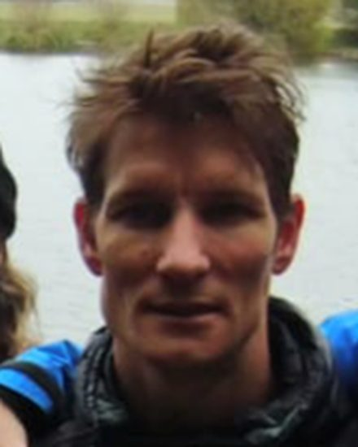
Tim Lawrence
Tim Lawrence is a Consultant Paediatric Neurosurgeon and clinical lead for Paediatric Major Trauma at the Oxford Major Trauma Centre. He sub-specialises in Neuro-Trauma and Craniofacial surgery. Following Neurosurgical training in Oxford, and a Paediatric Neurosurgery fellowship, Tim undertook a DPhil in traumatic brain injury. His research focuses on the secondary injury cascade during the hyper-acute phase following injury.
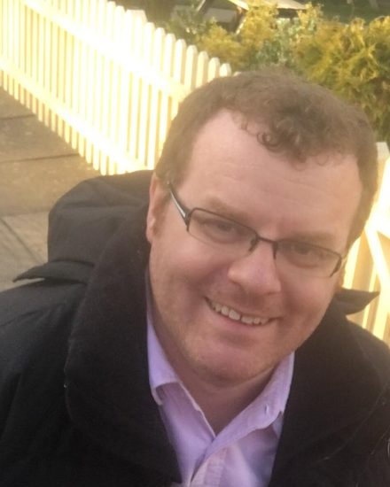
Chris Parsons
Chris is a Paediatric Surgeon with an interest in child and adolescent trauma based in Leeds.
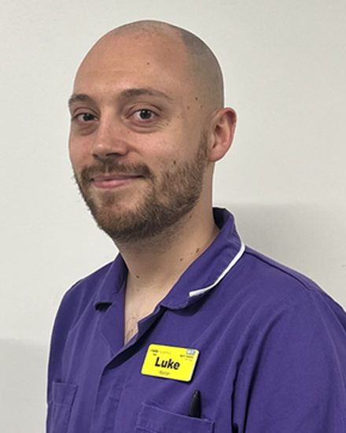
Luke Whittemore
Luke is the Matron for the Paediatric Emergency Department at the Royal London Hospital. He has worked previously at the John Radcliffe Hospital in Oxford, and has done prior roles working as a Safeguarding Children’s Advisor and working pre hospitally as an Ambulance Nurse with South Central Ambulance Service.
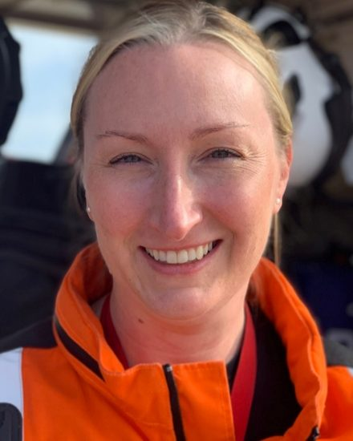
Anna Dobbie
Anna is a Consultant in Emergency Medicine working in both the paediatric and adult departments at the Royal London Hospital. She is also a Consultant in Prehospital Care and works for London HEMS. She has specialist interests in Paediatric trauma and team leadership both in hospital and in the prehospital arena.
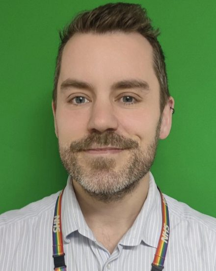
Craig Knott
Craig is a Paediatric Intensive Care consultant at Royal London Hospital in East London. He completed his training in paediatrics and paediatric intensive care Medicine in North London and Toronto, Canada, and was a locum consultant at the Children’s Acute Transport Service (CATS). His work interests are multi professional education and training, patient safety and human factors, and paediatric major trauma.
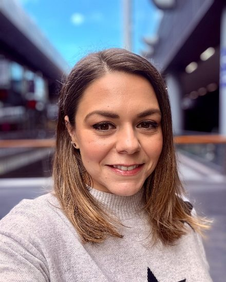
Alexandra Pelivan
Alex is a PEM Consultant at the Royal London Hospital. Her special interests are Paediatric Trauma and Adolescent Emergency Medicine. She is passionate about improving the care of adolescents who present in Emergency Departments across the UK.
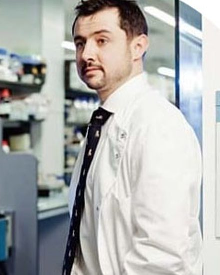
William Dawes
Will is a Consultant in Paediatric Neurosurgery at Oxford University Hospital and Honorary Associate Professor at UCL Institute of Child Health. His research focusses on neonatal brain injury, specifically developing novel therapeutics for intraventricular haemorrhage. He has a specialist interest in paediatric neurotrauma and teaches on the QMUL Trauma Masters Course.
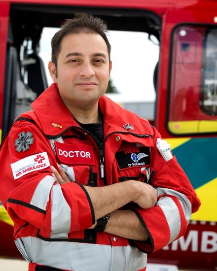
Syed Masud
Syed is a consultant in Emergency Medicine, Paediatric EM, Pre hospital EM and in the police force. He has worked at the Royal London Hospital, JR in Oxford and is currently based in Cardiff.